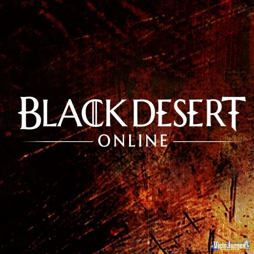

Black Desert es un MMORPG de acción y mundo abierto lanzado originalmente en 2015 para PC. En él, los jugadores pueden explorar un gran mundo de fantasía, participar en combates rápidos basados en habilidades, gestionar profesiones como pesca, comercio, alquimia y montar batallas de asedio de nodos. Su fuerte personalización de personajes y su motor gráfico avanzado lo hicieron destacar en el género.
El juego fue desarrollado y publicado por Pearl Abyss, un estudio surcoreano fundado en 2010 con la misión de crear MMORPGs de alto nivel técnico. Pearl Abyss diseñó un motor propio para Black Desert que permitió ambientes detallados, físicas complejas y una experiencia inmersiva en múltiples plataformas (PC, consola y móvil).
En los últimos tiempos, Black Desert ha continuado ampliando su mundo con contenido nuevo, eventos de temporada y mejoras en su sistema. Por ejemplo, se lanzó la expansión “Edania: The Demon Realm” con nuevas zonas y desafíos, junto a servidores especiales de temporada que permiten progresión más rápida. Además, se han implementado mejoras de calidad de vida, funciones remozadas de interfaz y soporte ampliado para distintas plataformas.